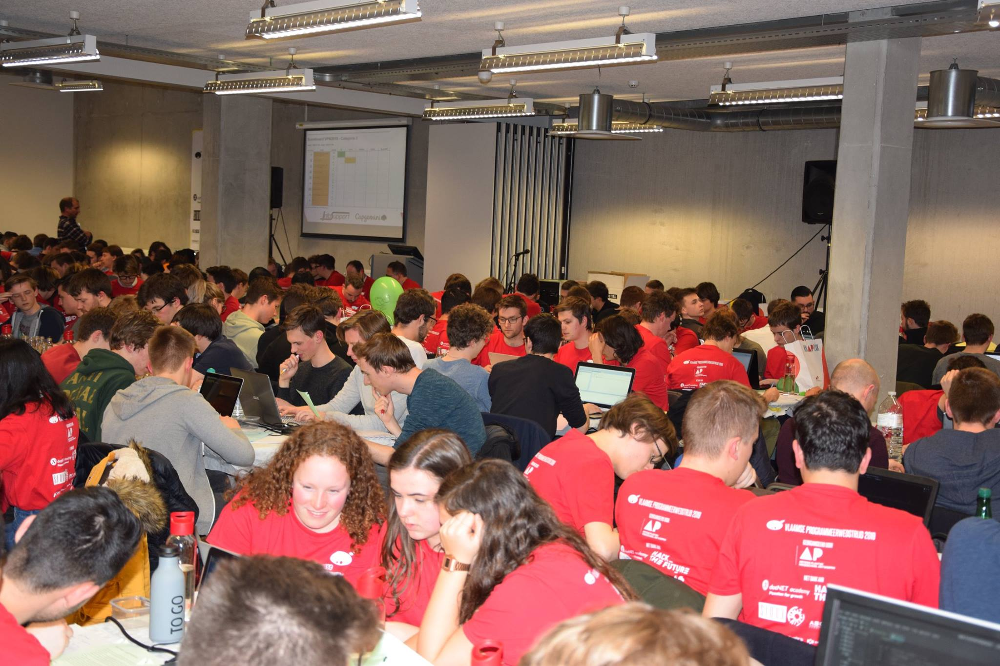

<div class="container">
    <div class="row align-items-center">
        <div class="col">
            <h1>Vlaamse Programmeerwedstrijd 2019</h1>
            <div>
                <p>
                    In het tweede jaar heb ik deelgenomen aan de Vlaamse Programmeerwedstrijd. Deze vond plaats op woensdag 13 maart 2019 in de gebouwen van de AP Hogeschool in Antwerpen. Ik had van enkele vrienden gehoord dat zo een programmeerwedstrijd wel leuk kon zijn, en toen ze me vroegen of ik samen met hun deel wou nemen heb ik dan ook niet getwijfeld. Zo een programmeerwedstrijd is niet alleen leuk, je kan er niet alleen prijzen mee winnen en I-Talent uren voor krijgen, ook kan je er heel wat door bijleren.
                </p>
                <p>
                    De dag begon vroeg want we hadden er nog een hele verplaatsing voor de boeg. Na een ritje met de gebruikelijke files richting Antwerpen en wat te zoeken naar een parking kwamen we aan op de place to be. We meldden ons aan en kregen een naamkaartje en een T-shirt met de nodige sponsoren van de wedstrijd. Omdat we er ruim op tijd waren konden we nog rustig middageten en zelfs nog even rond gaan op de soort van jobbeurs die er nog aan de gang was. Rond twee uur zijn we dan naar onze gereserveerde plaats gegaan en hebben we ons geïnstalleerd. Niet veel later was er een verwelkomingstoespraak van de jury en werden de belangrijkste punten van het wedstrijdreglement kort doorlopen. 
                </p>
                
                <p>
                    Toen dat alles achter de rug was, konden we er aan beginnen. De groene papieren met de vijf opdrachten voor categorie drie, voor hogeschoolstudenten en dus de categorie waar wij toe behoorden, werden uitgedeeld. Het eerste wat we deden was het nietje uit de bundel verwijderen en de opdrachten onder ons drie verdelen. Ik nam de opdracht ‘Splitwise voor dwergen’ voor mijn rekening. De bedoeling van deze opdracht was om een rekening op een specifieke methode te betalen. Ik begon meteen wat te brainstormen, maar omdat er tijdens de wedstrijd slechts van één laptop gebruik gemaakt mocht worden, heb ik eerste een deel op papier uitgedacht. Ik kwam er echter achter dat het een niet zo simpele opdracht was. Ook mijn andere teamleden hadden moeite met hun opdracht. Omdat we dit alle drie al snel doorhadden, hebben we gekozen om dan maar voor een andere aanpak te kiezen. We overliepen eerst even alle opdrachten en merkten dat het allemaal vrij ingewikkelde opdrachten waren, op één opdracht na. De opdracht ‘Opmaak’ was best simpel. Er moest met een bepaalde invoer een soort rekentabel bekomen worden die een mooie opmaak had. Deze opdracht hebben we dan ook snel met wat pair programming tot een goed einde kunnen brengen. De andere opdrachten zijn een ander verhaal. Aan drie van de vier zijn we wel begonnen, maar uiteindelijk niet klaar geraakt. De laatste en moeilijkste opdracht zijn we niet eens aan begonnen. Indien we iets meer tijd hadden gehad dan de drie voorziene uur hadden we misschien nog een opdracht volledig af kunnen krijgen, maar dit was niet het geval. Rond zes uur stond dan de prijsuitreiking op het programma. We wisten dat we niet zouden winnen, maar waren toch nog blij verrast dat we in de top tien van onze categorie beland waren. 
                </p>
                <h4>Reflectie</h4>
                <p>

                </p>
            </div>
        </div>
    </div>
</div>

